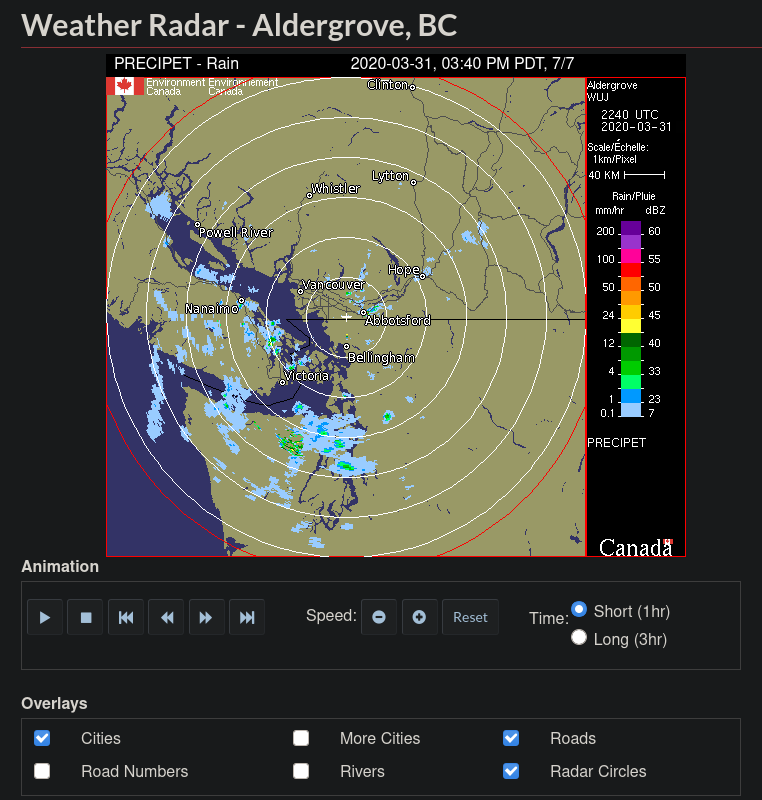
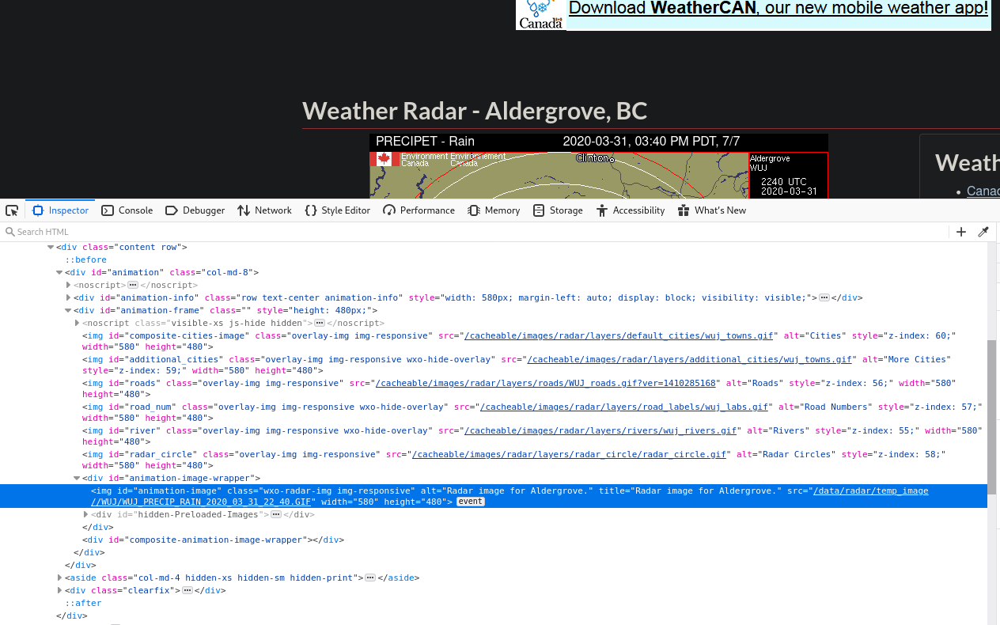
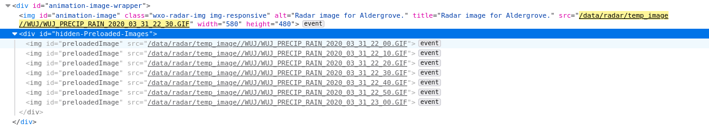
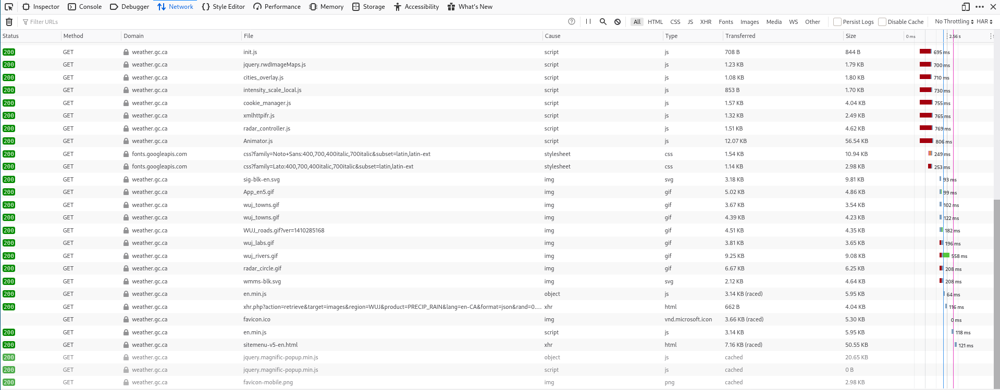
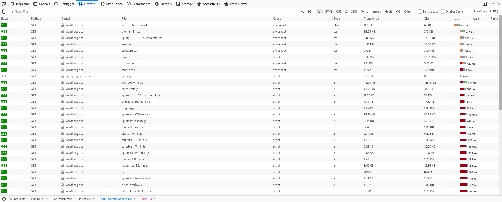
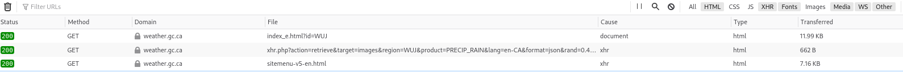
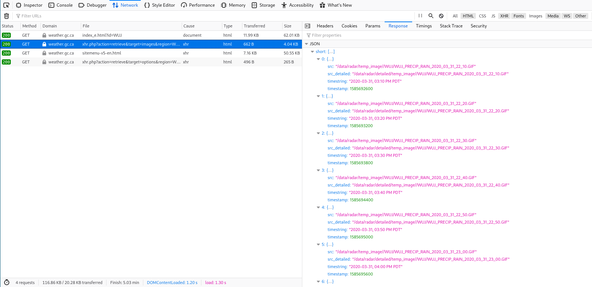
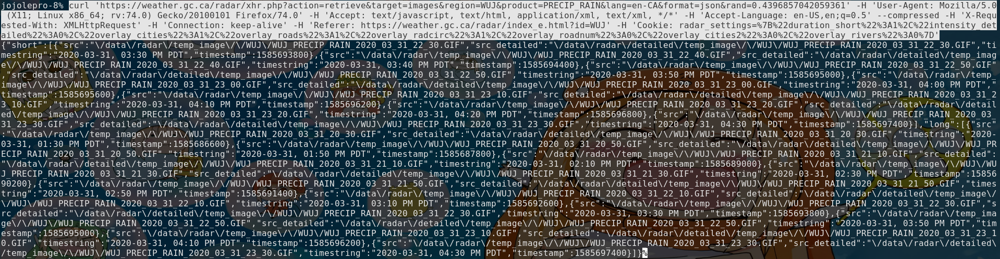

Extracting Data From A Website
================================================================================
Sometimes, you want to get the data or images that is visible on your screen
while visiting a websites, and its not too clear how you can get it
automatically.
Here, I will show you a general process of doing just that.
I will first explain the important concepts and illustrate them using a real
life example.
If you know how websites work, you can skip the next section.
Web Pages Basics
===============================================================================
Let's first discuss how web pages get filled with data, being images or
text/numbers.
There is usually two locations where this happens:
On the server or on the client.
Filled Server Side
--------------------------------------------------------------------------------
This is what older website usually do.
A webpage is usually composed of 4 things:
- Html (.html): The layout of the page and the text.
- Css (.css): The style (we don't care about this for now.)
- Javascript (.js): Executable code that will change the page.
- Other ressources: Images, files, etc.
When requesting a web page, your web browser asks the web server to give it an
html file. The server takes the local html file, inserts the data into it
(being it text, numbers or paths to images) and then sends it to you.
In this case, getting the data is easy. More on this a bit lower.
Filled Client Side
--------------------------------------------------------------------------------
Now, new websites usually want to be more dynamic. That is, they want to load
content into the page without completely requesting a new html file.
They do this by using Javascript. Here's what happens:
- Your browser asks the server for the html file.
- The server gives you the html file without filling in the data.
- Your browser reads the html and executes the javascript code that it finds
(or it downloads it first, if it is on the server.)
- The javascript asks the server for the data, when it is needed.
- The server gives the data.
- The javascript inserts the data into the html.
As you can see, it is definitely a bit more complex here.
The good news is that with a bit of intuition, we can pretty easily see what
the javascript asks to the server. In this situation, we will pretend to be the
javascript getting data.
Identifying What We Want
================================================================================
No matter the way the page was made, we first need to identify what we want.
As an example to illustrate what we will be doing, I will be extracting weather
radar data from a dynamic government website.
https://weather.gc.ca/radar/index_e.html?id=WUJ
I bet the link will eventually cease to work, but in any case, you can follow
along with any website in the next sections in case this one doesn't work
anymore.

Here, when we click the play button, the website will play an animation with
(usually) 7 pictures. A new picture is created every 10 minutes and the 7th is
deleted.
Now, what if we wanted to create an animation of the weather for the past day?
Since they don't provide an easy way to get old pictures, we will have to
download them for ourselves as time goes on.
Let's start by getting an understanding of how those are stored in the html.
Assuming you have access to developer tools (I use Firefox as my web browser,
but it should work on Chrome and others), you can right click the picture and
click "Inspect Element".
You should now see that there is quite a few "img" elements in there. In most
cases, the one selected is the one you want. If it is not, you can
find the one you want by right clicking on the different "src=" fields and
clicking "Open link in a new tab".
Sometimes, like in this case, the image I want is actually "deeper" in the
hierarchy.
That is, more to the right and inside another element.
In our case, it is the image inside the "div id=animation-image" element.

Now this is weird, there is only one picture in there. If you click the play
button of the animation however, you will see that a new "div" appears right
under our image in the inspector. Let's open it!

Ah, here's the 7 images that play in the animator.
What's happening here is that this website only loads the images once you start
playing the animation. This is often what dynamic websites do; they will load
data (like images) only when you need to see them.
Server-Filled
--------------------------------------------------------------------------------
In the case of a web paged filled on the server, you will already have the
image in there as soon as the page is first loaded. If this is your case, you
can simply use something like the following to extract the image source:
$ wget "https://blablabla" | pup 'img#the-id-of-the-image attr{src}'
(you can find pup here: https://github.com/EricChiang/pup)
If your web page is not like this, continue reading.
Understanding The Pattern
================================================================================
Here, we see that the source (src) of each image is composed of a name, a date
and a time.
We can guess that there are two ways those names got there. Either the
javascript we are executing knows the pattern (use time increments of 10
minutes) or, the more likely option, the server simply told us the names when
the javascript asked for them.
We will assume that the javascript asked for those names, as it is more common.
Identifying Our Sources
================================================================================
Let's switch to the "Network" tab of the developer tools and then refresh the
page.
You should see something like this:

Each of this is a request that our browser did to the server. That's a lot!
Let's scroll all the way up.

We see that our first request is for the html file.
Then we get our css style files and also javascript files.
The css files are not interesting to us and usually the javascript files won't
be either. You can see the types of files in the "Type" column.
We will skip all the css and js files.
Since we determined in the last section that our website is filled dynamically,
we can also ignore the image file types.
Let's look at what remains

Ahhhh, now it is way easier to see what is going on.
We have our html page, some "retrieve" file and a site menu.
Let's click on the retrieve file and in the right tab, open the "Response" tab.

Here! All our image sources are now available to us!
Now, let's right click the file, open in a new tab aaaaaaand... nothing.
This is something that will often happen with requests for data. The server
will usually expect some data that is not there when opening only using the
file source.
Go back into the network tab and right click on the file. Inside of the "Copy"
section, select "Copy as cURL". We will now open a terminal and copy what we
got inside. Magically, all our data is now here!

Simplyfing Our Request
================================================================================
As you can see, your request is really long and complex. By trial and error, we
can remove sections of it.
Here, the following request works:
$ curl "https://weather.gc.ca/radar/xhr.php?action=retrieve&target=images"\
"®ion=WUJ&product=PRECIP_SNOW&lang=en-CA&format=json" \
-H 'X-Requested-With:XMLHttpRequest' > /tmp/data.txt
Getting Our Sources
================================================================================
Our query works, now it is time to get the sources for those images.
Let's use `jq`, a tool that will make our life much easier to extract the image
links from this mess.
More details on jq can be found here: https://stedolan.github.io/jq/
This command will extract the urls from the big text we have.
$ cat /tmp/data.txt | jq -r '.short | map(.src) | .[]'
/data/radar/temp_image//WUJ/WUJ_PRECIP_RAIN_2020_03_31_23_20.GIF
/data/radar/temp_image//WUJ/WUJ_PRECIP_RAIN_2020_03_31_23_30.GIF
...
Since those aren't actually urls (they are missing https://....), we will add
those.
$ cat /tmp/data.txt | jq -r '.short | map(.src) | .[]' | sed \
's/^/https:\/\/weather.gc.ca/' > /tmp/urls.txt
If we look at our file, we see that everything looks good:
$ cat /tmp/urls.txt
https://weather.gc.ca/data/radar/temp_image//WUJ/WUJ_PRECIP_RAIN_2020_03_31_...
https://weather.gc.ca/data/radar/temp_image//WUJ/WUJ_PRECIP_RAIN_2020_03_31_...
....
and finally, we can download our images!
cd /tmp
wget -i /tmp/urls.txt
Conclusion
================================================================================
While I tried to make this as simple as possible, this is not a simple topic.
It requires knowledge of the web and of the linux tools.
This should be viewed more as an overview of the concepts than as a full
explanation of every tool we used. If this interests you, I would suggest you
go through all the tools and concepts we touched on to get and idea of what
everything is or does. Notably:
- Server sided data insertion (See PHP)
- Client sided data requests (See Javascript/jQuery)
- Linux cat/pipes/output redirection
- The jq command
- The wget and curl commands